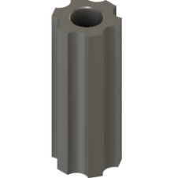
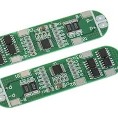
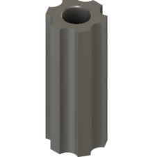
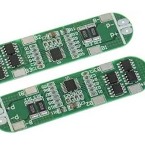
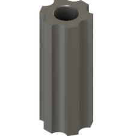
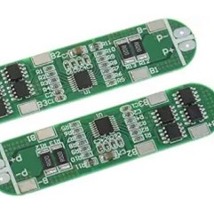
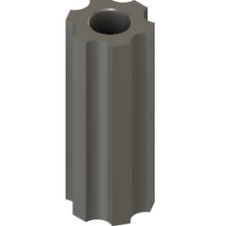
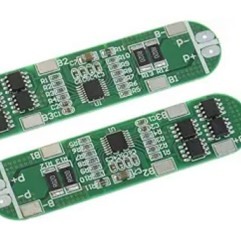

In my first year at ASME at Illinois, I joined the Product Development Subteam to work on the railbot. The railbot is a user-friendly way for elderly people to carry items upstairs. You simply put it on your railing, put whatever bags you want on the hook, and it carries the items up. Here, I was mainly part of the electrical/coding subteam where I worked on the rechargability and coding of our robot.
One of my main projects involved working on the recharging of the robot. This involved me researching and finding charging components for the battery. After this step I focused on soldering of the components and finally the testing phase. During the testing phase, we faced many issues with the actual charging mechanism not working. After extensive research, this was revealed to be an issue with not having a large initial voltage to "jumpstart" the charging circuitry.
Other than this main project, I contributed to the project in a few other ways. Firstly, I assisted with writing the C code so that we can have smooth acceleration and deceleration logic when starting up and approaching the end of the railing. Additionally, an issue we faced was the robot slipping on the railing due to not enough friction. To counteract this, we implemented silicone wheels. To assist with this I designed a mold frame using Fusion 360 so we could set the silicone, and this helped prevent slipping almost completely.